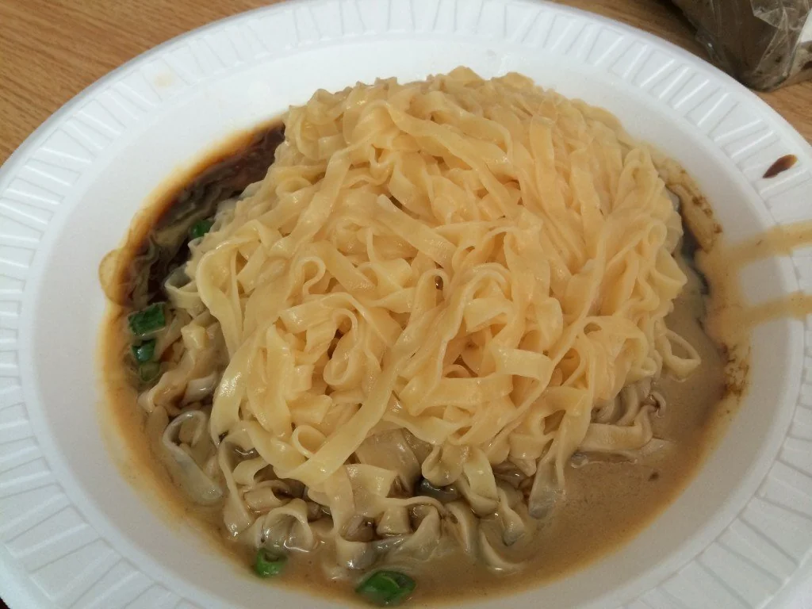

THOMAS A. EDISON CAREER & TECHNICAL EDUCATION HIGH SCHOOL
Web Development Class
Make a Recipe
William Cheng
10/17/2023
How to make Fuzhou Peanut Butter Noodles
Fuzhounese Peanut Butter Noodles are not only tasty but also healthy. They are a flavorful and nutritious dish that combines the richness of peanut butter with the freshness of noodles.
These noodles are packed with protein and fiber, making them a satisfying and energizing meal option. Give them a try and indulge in the deliciousness of Fuzhounese Peanut Butter Noodles!

From my iphone
Click here to view the recipe